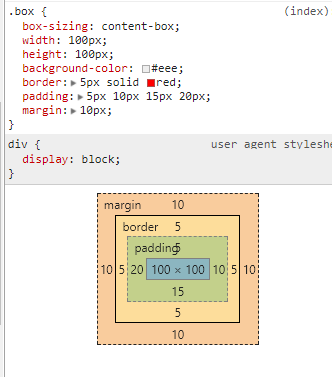
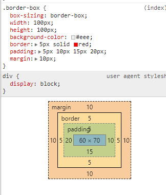

一、盒模型
在浏览器中有2种盒模型：W3C标准（标准盒模型），IE采用的盒模型称为（怪异盒模型），大部分浏览器在支持W3C标准的情况下还保留了IE采用的盒模型，在css3中可以通过box-sizing来设置。
当不对Doctype进行定义时，会触发怪异模式。
如下例子：
1.标准盒模型

在标准盒模型下：一个块的总宽度为：width+padding(left+right)+border(left+right)
####2.怪异盒模型

在怪异盒模型下：一个块的总宽度为：width
也就是说，内容的宽度应该为width - (border-left + padding-left + padding-right + border-right)
二、行内元素与块级元素
1.行内元素
一个行内元素只占据它对应标签的边框所包含的空间。一般情况下，行内元素只能包含文本数据或者其他行内元素。例子：
行内元素会在水平上一个接着一个排列。
2.块级元素
块级元素占据其父元素（容器）的整个空间，因此创建了一个“块”。通常浏览器会在块级元素前后另起一个新行。例子：
一般情况下，每一个块级元素的默认宽度与父元素相同。
3.display属性
- 当元素的CSS属性
display为block，list-item或table时，它是块级元素 ；
- 当元素的CSS属性
display的计算值为inline，inline-block或inline-table时，称它为行内级元素；
三、块格式化上下文（Block Formatting Context）
1.BFC
块格式化上下文（Block Formatting Context，BFC）是Web页面的可视化CSS渲染的部分，是块级盒布局发生的区域，也是浮动元素与其他元素交互的区域。
2.特征
- 内部的盒会在垂直方向一个接一个排列（可以看作BFC中有一个的常规流）；
- 处于同一个BFC中的元素相互影响，可能会发生margin collapse；
- 每个元素的margin box的左边，与容器块border box的左边相接触(对于从左往右的格式化，否则相反)。即使存在浮动也是如此；
- BFC就是页面上的一个隔离的独立容器，容器里面的子元素不会影响到外面的元素，反之亦然；
- 计算BFC的高度时，考虑BFC所包含的所有元素，连浮动元素也参与计算；
- 浮动盒区域不叠加到BFC上；
3.BFC创建
- 根元素或其它包含它的元素
- 浮动元素 (元素的
float不是none) - 绝对定位元素 (元素的
position为absolute或fixed) - 内联块元素 (元素具有
display: inline-block) - 表格单元格 (元素具有
display: table-cell，HTML表格单元格默认属性) - 表格标题 (元素具有
display: table-caption, HTML表格标题默认属性) - 匿名表格元素 (元素具有
display: table,table-row,table-row-group,table-header-group,table-footer-group[分别是HTML tables, table rows, table bodies, table headers and table footers的默认属性]，或inline-table) overflow值不为visible的块元素，display值为flow-root的元素contain值为layout,content, 或strict的元素- 弹性元素 (
display: flex或inline-flex元素的子元素) - 网格元素 (
display: grid或inline-grid元素的子元素) - 多列容器 (元素的
column-count或column-width不为auto即视为多列，column-count: 1的元素也属于多列) - 即便具有
column-span: all的元素没有被包裹在一个多列容器中，column-span: all也始终会创建一个新的格式化上下文。
4.实例
一、同一个BFC中的相邻的2个块margin重叠
上面部分有2个块级元素，属于同一个BFC内（html），于是边距发生了重叠。
而下面部分的2个块级元素，属于不同的BFC内，所以边距不发生重叠。
二、BFC中元素重叠
如上：.main和.side重叠了，因为2个box都是属于同一个BFC的。如果.main没有产生浮动，那么.main与.side应该是垂直排列的，但是.main产生了浮动，所以2个box都是从左边开始排列，所以形成重叠。
三、高度坍塌
这个看起来有点不整齐，为什么下面的contain会跑到上面去？因为上面的contain发生了高度坍塌，浮动元素的高度没有被计算进去。下面的contain，因为创建了BFC，所以BFC内浮动元素的高度被计算了进去，于是看到的是正常情况。
四、用途
挖坑待填？